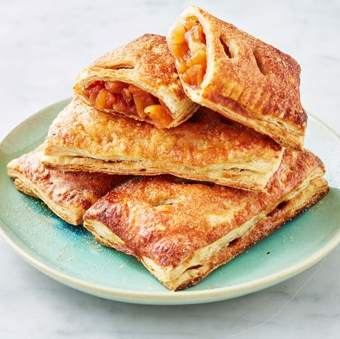

Egg Muffin
Egg muffin is an excellent source of protein and oh so delicious. We place a freshly cracked Grade A egg on a toasted English Muffin topped with real butter and melted American cheese.
Apple Pie
Apple Pie is double-crusted, with pastry both above and below the filling; the upper crust may be solid or latticed (woven of crosswise strips).
Nuggets
A chicken nugget is a food product consisting of a small piece of deboned chicken meat that is breaded or battered, then deep-fried or baked.